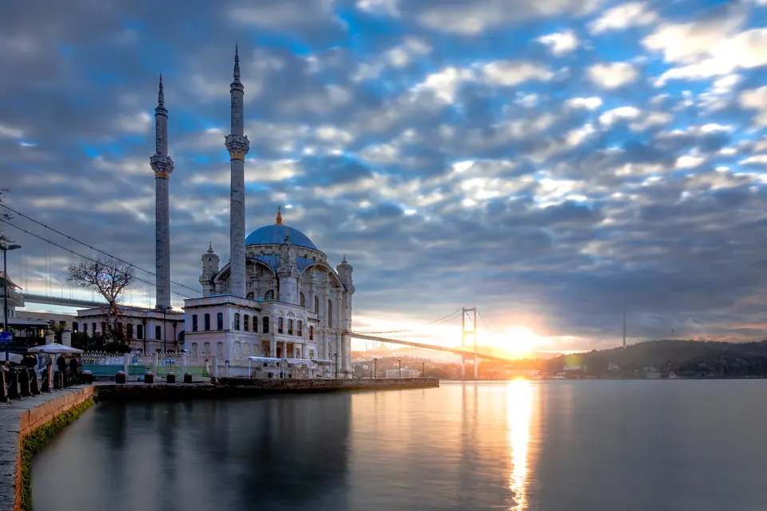
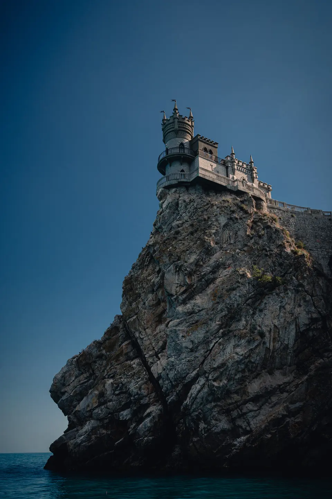
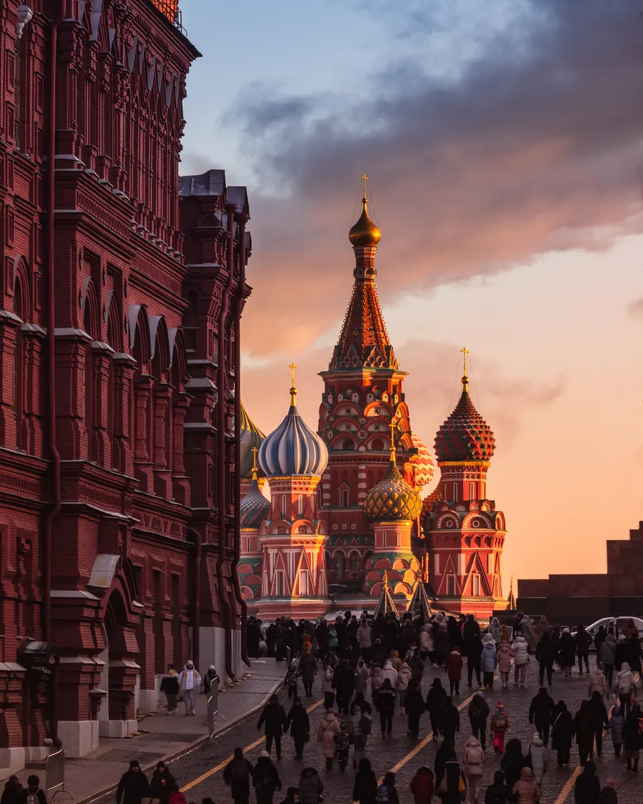
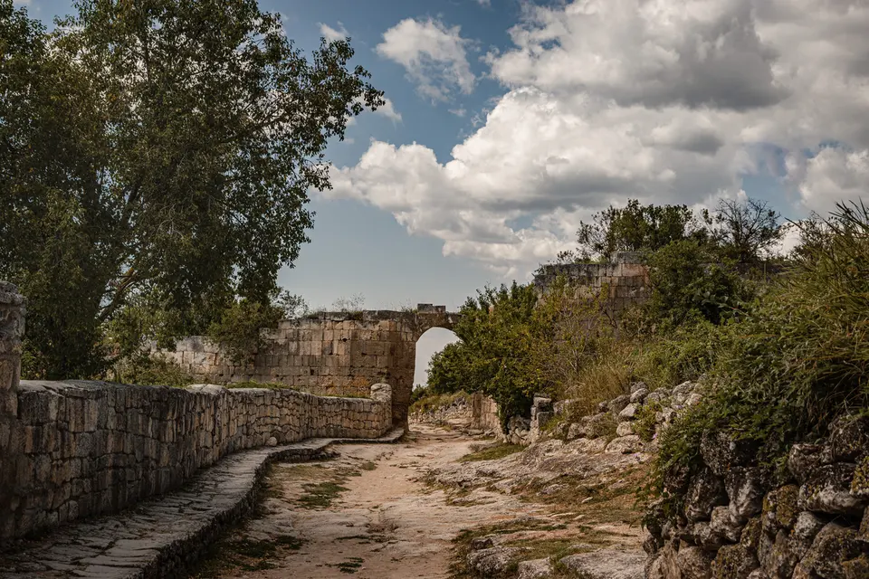
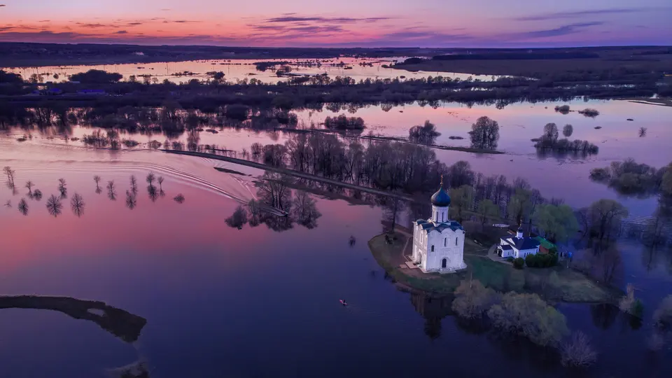
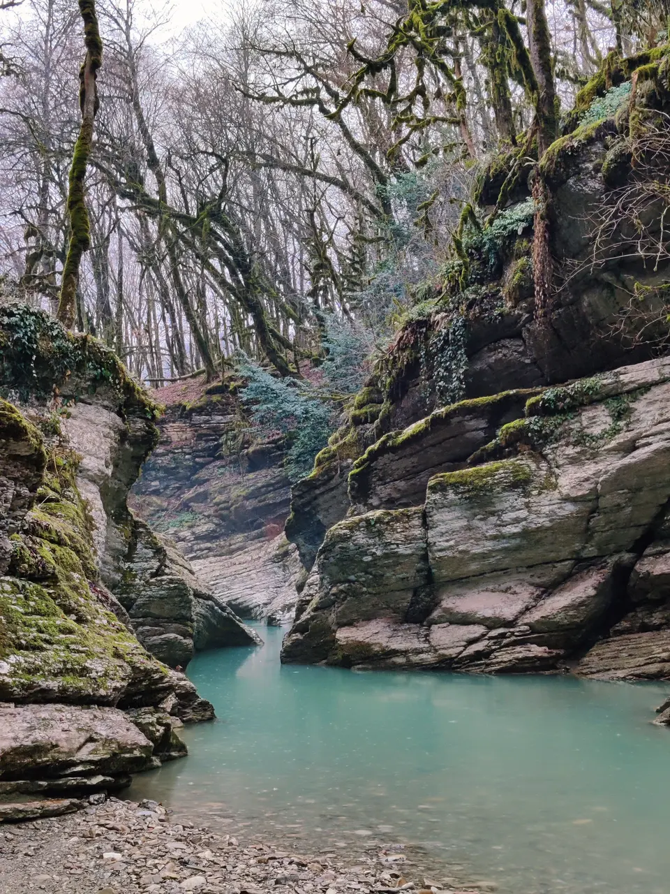
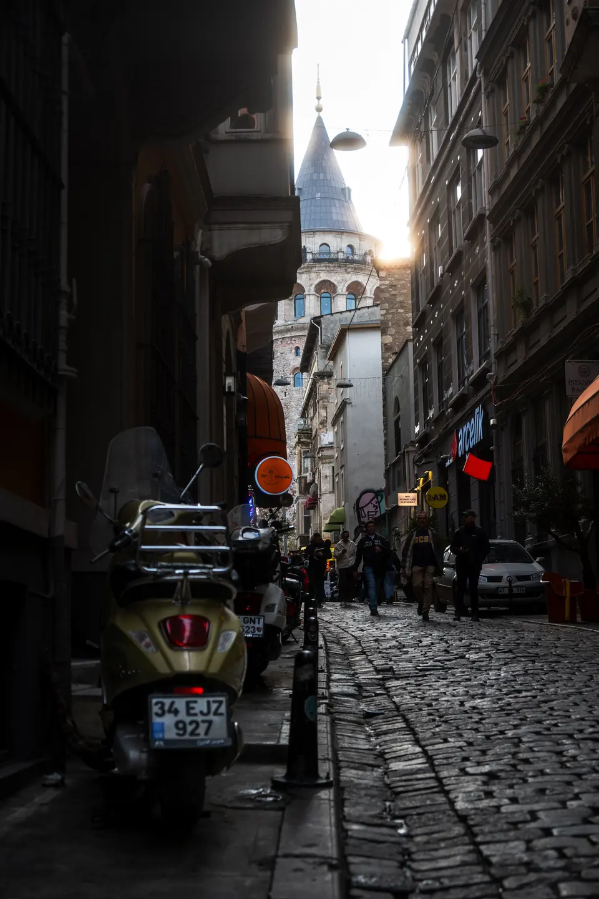

Ortaköy Mosque, Istanbul / 2025

Swallow's Nest / 2022

Red Square, Moscow / 2024

Abbadoned ruins / 2024

Church of the Intercession on the Nerl / 2024

Mossy gorge / 2021

Galata, Istanbul / 2025